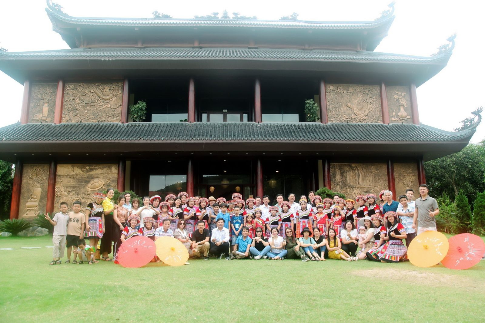
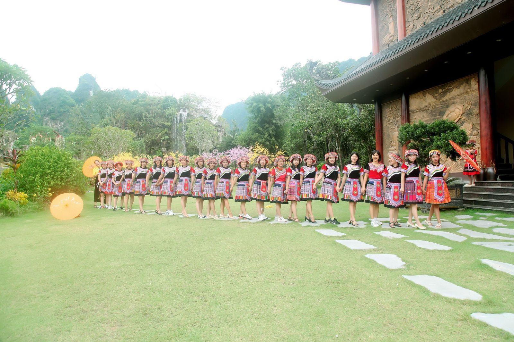

HOẠT ĐỘNG CHÀO MỪNG NGÀY PHỤ NỮ VIỆT NAM 20 -10 - 2023
Nhân dịp kỉ niệm 93 năm ngày Hội liên hiệp phụ nữ Việt Nam ( 20/10/1930- 20/10/2023). Trường THPT Ứng Hòa B đã tổ chức nhiều hoạt động chào mừng.
Tổ chức hoạt động dã ngoại, trải nghiệm nâng cao nhận thức của cán bộ , giáo viên,
nhân viên về quê hương đất nước.

Khu du lịch Hồ đá cổ Thiên Long ( Lương sơn- Hòa Bình)

Ban nữ công ôn lại ý nghĩa lịch sử ngày 20/10 và thành tích nổi bật của cô trò trường THPT Ứng Hòa B trong giờ sinh hoạt dưới cờ ( Thứ 2 ngày 16/10/2023)
Lịch sử dân tộc Việt Nam là lịch sử dựng nước và giữ nước. Trong hàng ngàn năm lịch sử ấy phụ nữ giữ một vai trọng yếu và hiển nhiên trong lịch sử dân tộc. Họ là những người chống giặc ngoại xâm kiên cường bất khuất, họ là những người lao động cần cù, thông minh, sáng tạo, họ là những người gìn giữ giống nòi và phát huy giá trị văn hóa dân tộc, họ là những người sản sinh ra những thế hệ anh hùng của dân tộc anh hùng. Trong dịp kỷ niệm ngày 20/10 năm nay chúng ta hãy cùng nhau ôn lại truyền thống hào hùng của phụ nữ Việt Nam bằng những tấm gương tiêu biểu qua các thời kỳ lịch sử để rồi mỗi chúng ta dù ở cương vị nào cũng trân trọng và tự hào, phấn đấu vươn lên xứng đáng với truyền thống vẻ vang ấy.
Phát huy truyền thống của người phụ nữ Việt Nam. Trong suốt 56 năm xây dựng và phát triển trường THPT Ứng Hòa B. Các cán bộ, giáo viên, nhân viên và các em học sinh nữ của nhà trường cũng đã có những thành tích đóng góp to lớn trong hoạt động nhà trường.
Có được những thành tích như trên trước hết là do sự phấn đấu nỗ lực của bản thân mỗi nữ cán bộ giáo giên, nhân viên và mỗi em nữ sinh cùng với sự phối hợp và sự phát triển của các đoàn thể, của những người thân trong gia đình.